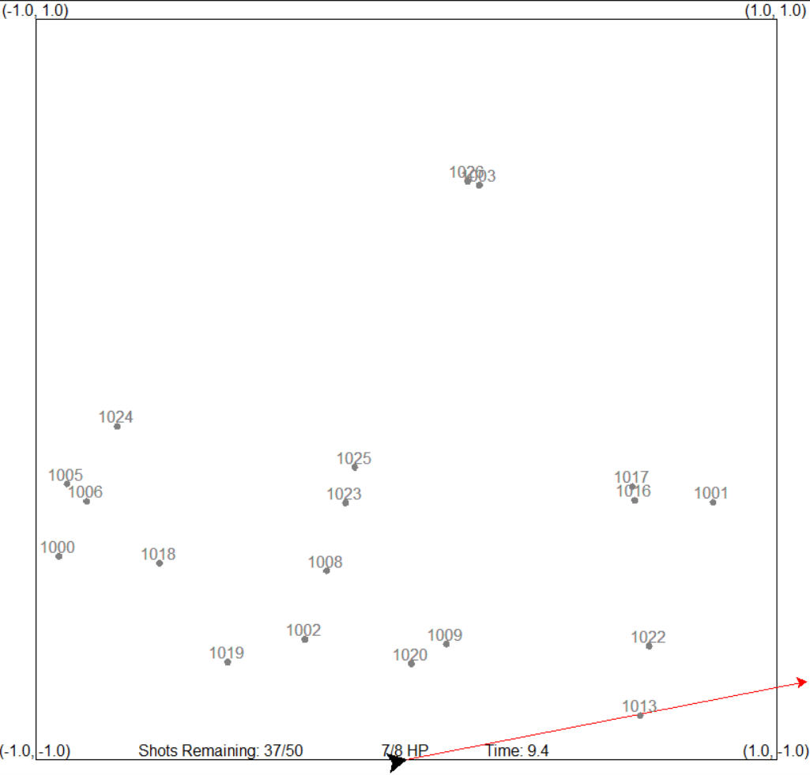
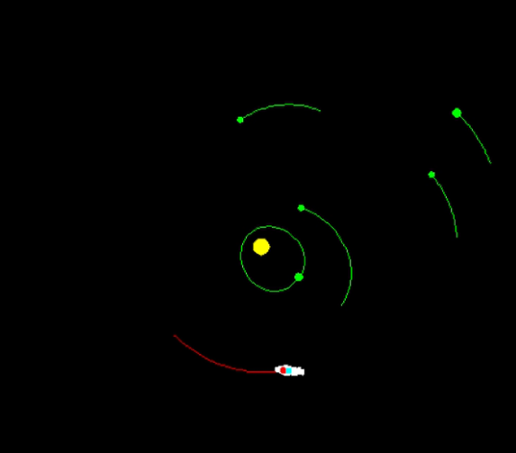
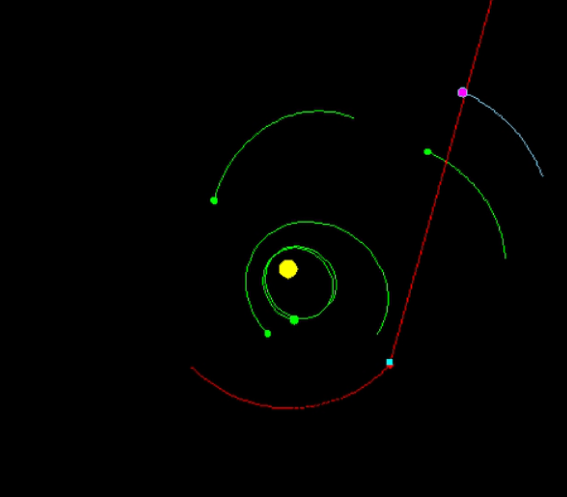
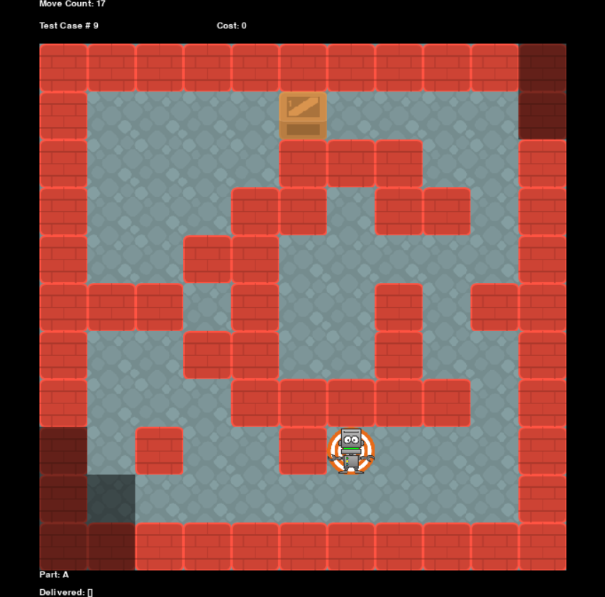
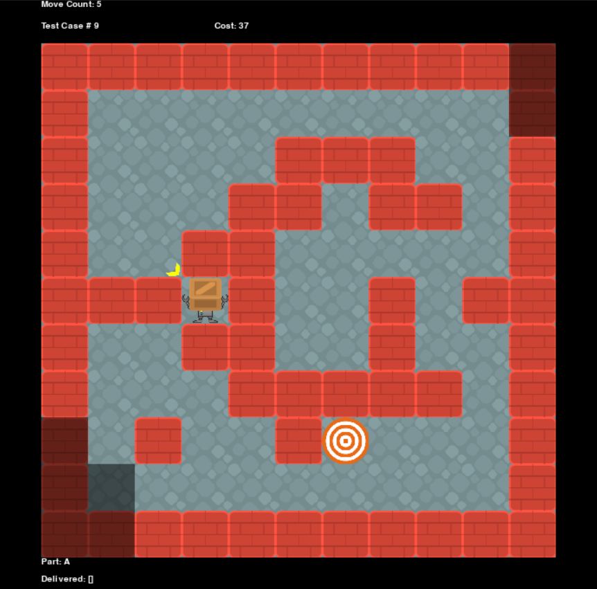
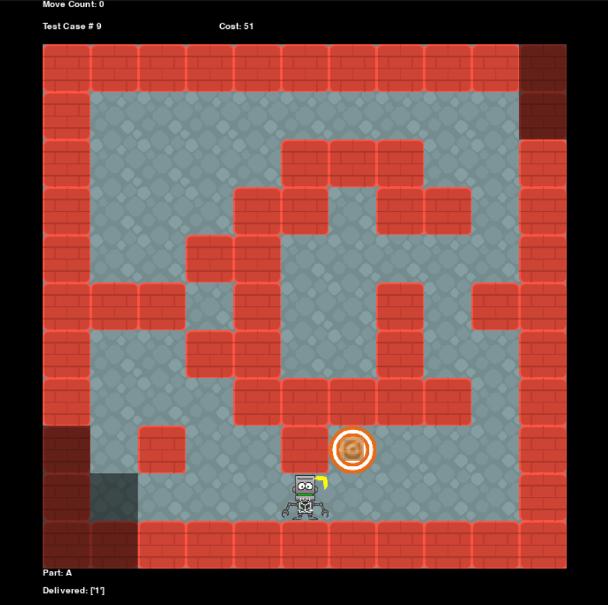
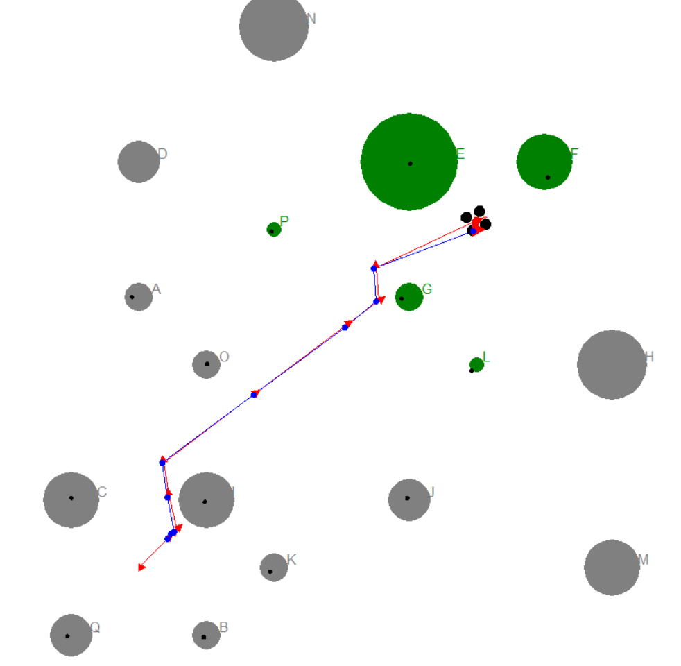
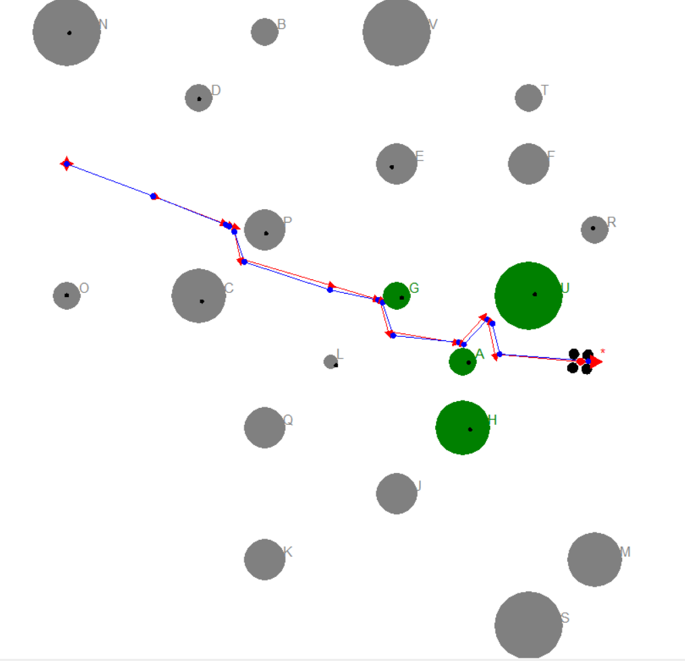
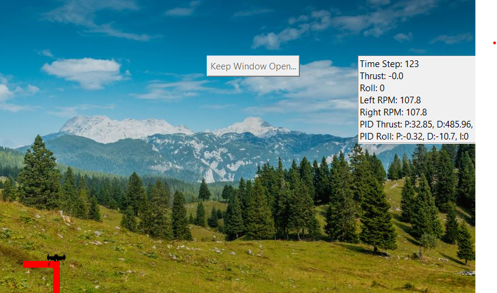
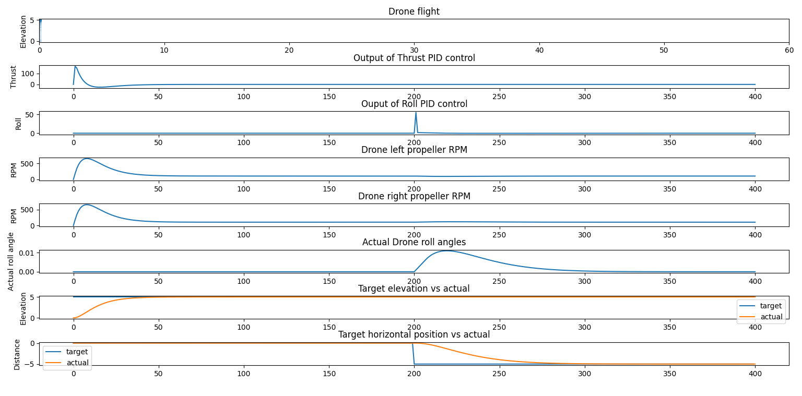

Georgia Institute of Technology

I am currently working towards a secondary master's in computer science with a specialization in computational perception & robotics from the Georgia Institute of Technology. I have taken courses in Artificial Intelligence for Robotics, Computer Vision, Machine Learning, Reinforcement Learning, and Embedded Software Optimization. These are the various projects that I have worked on.
Kalman Filter & Particle Filter
Summary
In Artificial Intelligence for Robotics, one of the assignments was to create a 2D missile defense algorithm that could anticipate the positions of falling meteors and prioritize the order in which to shoot them down. This was done using a Kalman filter. In another project, particle filters were used to locate an orbiting satellite and transmit a signal to its home planet in a known orbit.



Skills Used:
- python
- kalman filters
- particle filters
A* Search
Summary
In another project, A* search was used so that a robot could navigate a warehouse to retreive one or more boxes and return them to a specified goal location.



Skills Used:
SLAM
Summary
In another project, SLAM was used to allow a drone to navigate a 2D map to retrieve a treasure at a specified location, while avoiding trees.


Skills Used:
PID Control
Summary
In another project, PID control was used to move a multi rotor drone along a specified path and then maintain a stationary position.


Skills Used: